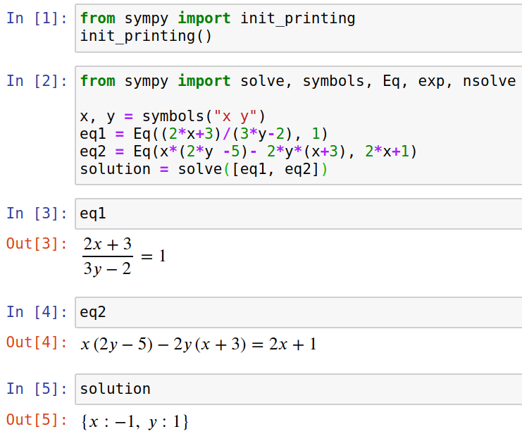

A friend recently asked me if I could help her to find the solution to a system of non-linear equations. I remembered Sympy, a Python library for symbolic computations.
Installation is easy:
pip install sympy
Solving a Single Equation
from sympy import Eq, symbols, solve
x = symbols("x")
eq = Eq(x ** 2, 9)
print(solve(eq))
And it returns [-3, 3]! Awesome! So it found all solutions for that single,
simple equation!
Solving a System of Equations
from sympy import Eq, symbols, solve
x, y = symbols("x y")
eq1 = Eq(x * y, 35)
eq2 = Eq(x + y, 12)
print(solve([eq1, eq2]))
This returns [{x: 5, y: 7}, {x: 7, y: 5}] 🎉
Visualization
Equations can get really complicated and typos happen easily. Rendering the
equations in a nice way helps a lot to find bugs. I do this by starting
a Jupyter Notebook. Just install jupyter and enter
jupyter notebook in the console.
Add this to a cell in the notebook and execute it:
from sympy import init_printing
init_printing()
It looks like this:
{kind=link}

Alternatives
- Wolfram Mathematica (comparison): Pretty expensive, no Python binding